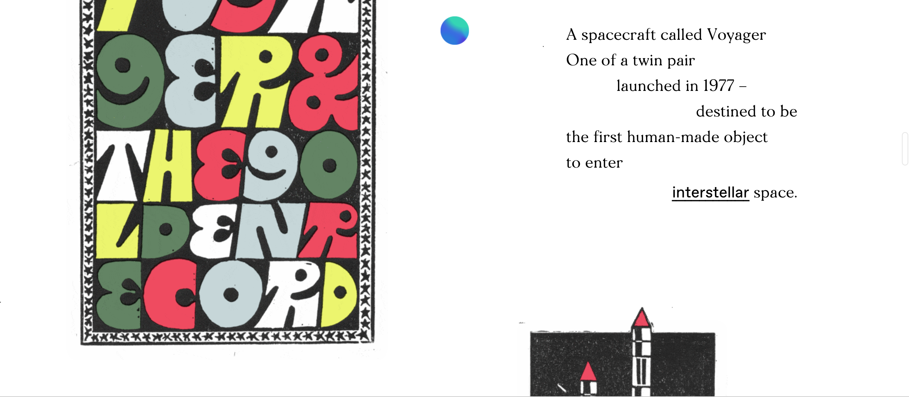
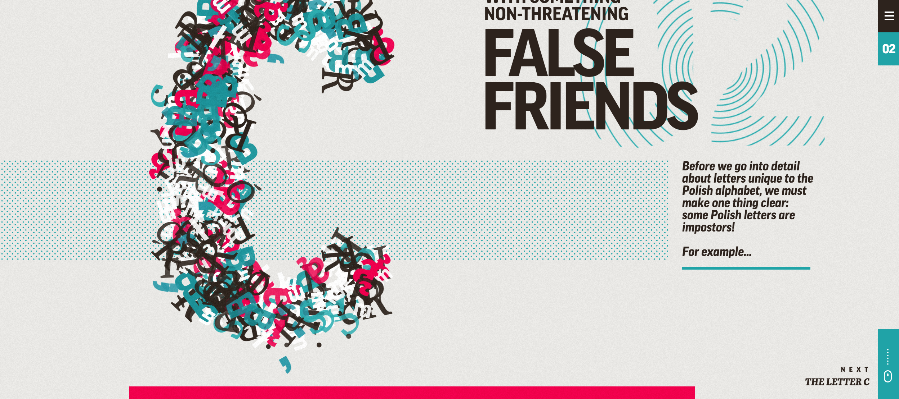

A Message from Earth

http://amessagefrom.earth
Message from Earth is an interactive website where the user is able to scroll and interactive with different elements on the website. It provides an interesting perspective as the user is able to hear messages as if the Earth is talking to the user. So in addition to the textual and vivid colors, the designers have also incorporated auditory effects. I believe this is an interesting way to think about how to design interactively, as we are more engaged with the different types of senses.
In terms of how information is laid out, Message from Earth uses scrolling as the main technique to navigate throughout the website. This gives a continuous feeling as we are constantly presented with different information, and I believe this this is a good asset due to Earth's long history. In addition, Message from Earth has a nice balance of visual effects and visual density by being able to have enough visual effects, but also showing static pictures and movements to not tire out the eye. It is also interesting to note that this website uses different typographies to convey different time eras or personas.
A limitation of this website is how the user is unable to easily navigate through the website. As mentioned, the website is divided up into different sections. But with the way the website is currently designed, users are not able to freely navigate to the section of their choice. This limits the user and the design in effect. However, I enjoyed the contents of this website as users are able to see the development of human beings in the branch of diversity. We can see how diverse the human race has become, and this website does a great job in showing these aspects creatively.
The Polish Alphabet

http://culture.pl/multimediaguides/alphabet/false-friends/0
The Polish Alphabet is still an interactive website, but it relies more heavily on clicking and visual effects. Though the difference is slight, I believe it makes a difference when presenting the material to the audience. For example, because The Polish Alphabet is designed to teach users who are not Polish the Polish language, it relies heavily on visual cues and words that are familiar. On the other hand, Message from Earth is conveying the status of Earth and uses all sorts of techniques to engage the user.
With the information layout, The Polish Alphabet relies more on clicking. Though I believe it is fine to click for a few slides, the Polish Alphabet has 39 characters. So I believe it is beyond the usual comfort for a user having to click through so much. In addition, I believe the visual density from The Polish Alphabet is too distracting. Each time the user is flipping through the content, it shows a transition slide. In the beginning, this transition slide is a nice, visual appeal, but after flipping through numerous letters it becomes cumbersome and tiring. In addition, due to the animation of the letters, the user can become easily distracted in terms of what to focus on. There are many text boxes, visual highlights, and animations. This can become overwhelming as the user may not know where to focus and miss the core information.
However, The Polish Alphabet does an overall good job on conveying the information of the Polish language. I think it was quirky and neat in demonstrating a language to a foreigner. This project highlights the aspect of diversity as it touches upon language diversity. English and Chinese are one of the most popular languages in the world, but it is interesting to bring highlight to ones that are not most predominant in society, such as Polish.